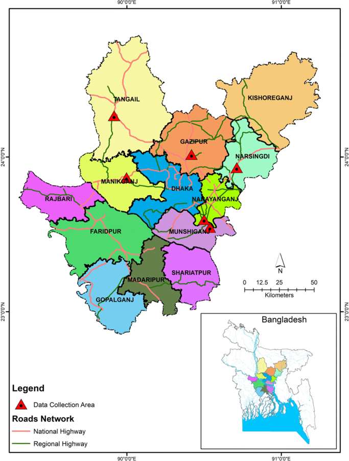

ঢাকা বাংলাদেশের রাজধানী ও মহানগর বা বৃহত্তম শহর। প্রশাসনিকভাবে এটি ঢাকা বিভাগের ও জেলার প্রধান শহর। ভৌগোলিকভাবে এটি বাংলাদেশের মধ্যভাগে বুড়িগঙ্গা নদীর উত্তর তীরে একটি সমতল অঞ্চলে অবস্থিত। ঢাকা দক্ষিণ এশিয়ায় মুম্বাইয়ের পরে দ্বিতীয় বৃহৎ অর্থনৈতিক শহর। ঢাকার জিডিপি ১৬২ বিলিয়ন মার্কিন ডলার (২০২০)। এছাড়া ঢাকার পিপিপি ২৩৫ বিলিয়ন মার্কিন ডলার (২০২০)। ভৌগোলিকভাবে ঢাকা একটি অতিমহানগরী বা মেগাসিটি; ঢাকা মহানগরীর মোট জনসংখ্যা ৪ কোটি ৪২ লাখ ১৫ হাজার ১০৭ জন, যা দেশের মোট জনসংখ্যার প্রায় ১১ ভাগ।[৪] জনসংখ্যার বিচারে ঢাকা দক্ষিণ এশিয়ার দ্বিতীয় বৃহত্তম এবং বিশ্বের সপ্তম বৃহত্তম শহর।[৫] জনঘনত্বের বিচারে ঢাকা বিশ্বের সবচেয়ে ঘনবসতিপূর্ণ শহর; ৩০৬ বর্গকিলোমিটার আয়তনের এই শহরে প্রতি বর্গকিলোমিটার এলাকায় ২৩ হাজার লোক বাস করে।